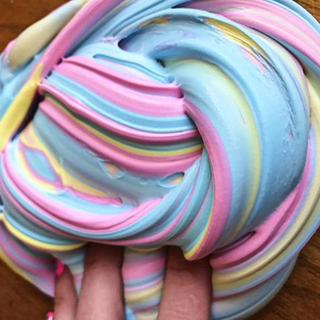
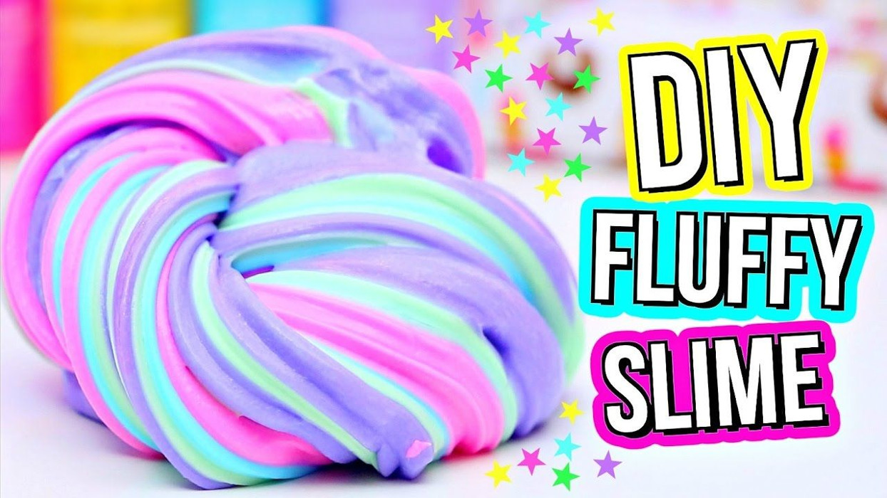

Hello, My name is Aisha
Today I am going to tell you how to make fluffy slime.
These are the materials that you will need.
1) PVA glue
2) Shaving Foam
3) Borax/Detergent
4) Colouring
5) Bowl
6) Somthing to mix it with

Now I will tell you the method.
Firstly you pour the PVA glue into a bowl.
Then you add an amout of shaving foam but not to much otherwise you won't see the colours.
Next you add pink,yellow and blue colouring into the bowl, mix well.
After keep adding borax/detergant slowly into the bowl.
Finally you knead the mixsture into your hand and gradually you will get slime!
I hope you enjoyed my slime recipe and I hope it worked out for you!
